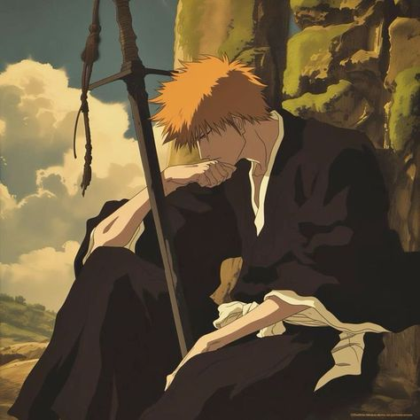

Bleach
В мире, где души мертвых пересекают границы между жизнью и смертью, юный Ичиго Куросаки, обладающий способностью видеть духов, неожиданно становится Шинигами — защитником мира живых. После встречи с загадочной Рукией, он принимает на себя её обязанности, сражаясь с опасными пустыми и раскрывая тайны своего прошлого. В его пути стоят не только могущественные враги, но и сложные отношения с друзьями и врагами. Каждый бой открывает новые грани силы Ичиго и его предназначения. В этом захватывающем путешествии он должен найти баланс между двумя мирами, чтобы защитить тех, кого любит, и узнать истинную природу своей силы.
Аниме "Блич" (Bleach) было создано на основе манги Тэйте Кубо, впервые опубликованной в журнале Weekly Shōnen Jump в 2001 году. Аниме-адаптация стартовала в 2004 году и была разработана студией Pierrot. Сюжет следует за Ичиго Куросаки, подростком, который становится Шинигами и защищает мир от злых духов. "Блич" быстро завоевал популярность благодаря динамичным боям, ярким персонажам и глубоким темам о жизни и смерти. Аниме продолжалось до 2012 года, выпустив 366 эпизодов, и вернулось в 2022 году с адаптацией финальной арки манги, "Тысячелетняя кровавая война", что вновь привлекло внимание фанатов по всему миру.
Интересные факты
- Создатель Тайто Кубо изначально хотел назвать его "Блич: Битва душ".
- Студия: Аниме было разработано студией Pierrot.
- Сила: Ичиго может использовать различные формы своей силы
- В манге "Блич" всего 686 глав, завершившихся в 2016 году.
- Тайто Кубо вдохновлялся различными культурами, включая испанский и немецкий языки.
- В "Блич" много отсылок к японской мифологии и культуре.
- Персонажи часто используют уникальные техники, называемые "зандзюцу".
- Тайто Кубо часто добавлял в мангу свои личные заметки и комментарии.